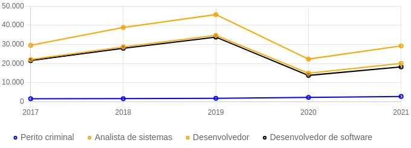

A investigação criminal é uma ciêcia que envolve fatos que seria usado para julgamensyo criminal. Uma investigação completa inclui buscas, entrevistas,interrogatorios e coleta a preservação de provas e varios metodos de investigação. As investigação criminal moderna é considerada geralmente com tecnicas modernas como ciêcia forense.
A investigação criminal é considerada (1.700 a.C). Como no código, sugere-se que tanto o acusador quanto o acusado tenham direito de apresentar provas que eles coletaram.A investigação são feitas com mais frequência pelas forças policiais do governo. Já os detetives particulares são comunente para auxiliar na investigação criminal.
OBJETIVO: o fato constante da noticia de investigação e na averigação da sua esencial relevancia penal (triplicidade, antijuridade e culpabilidade) e suas circunstancias
INVESTIGAÇÃO (TECNICA)
- Motivo (ex, ganho finaceiro, ou vingança)
- Meio para cometer o crimi (ferramenta e capacidade fisica)
- Oportunidade (estar ou não no momento do crime)
ATIVIDADE:investigação criminal defensiva, como:
- tomada de depoimento;
- juntada de documentos;
Uma de seus principais trabalhos é ir até o local onde podem ter acontecido as ocorrências e coletar provas que precisem passar por minuciosa análise com base em evidências científicas, comportamentais e demais meios de utilização legais.
O perito criminal pode investigar desde crimes com aplicação da violência como assassinatos, estupros e roubos ou investigações que envolvam fraudes em documentação, computadores, celulares e problemas fiscais.
saldo do último ano +1930 vagas
cidade com maior salário Vinhedo
salário médio R$ 1.666,87
O MERCADO APRESENTA CRESCIMENTO NOS ÚLTIMOS ANOS
Para que você entenda um pouco mais sobre o mercado, separamos os principais requisitos da área: graduação em um curso superior. Algumas titulações pedidas em concursos são Biologia Bioquímica Ciências Contábeis Engenharia Farmácia Medicina Psicologia e Química aprovação em concurso público para perito criminal

ADVOGADO NÃO PODE FAZER INVESTIGAÇÃO CRIMINAL DEFENSIVA